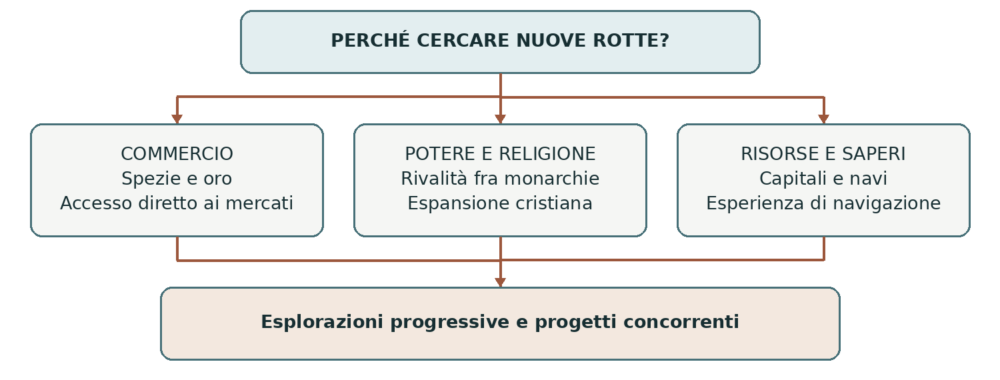
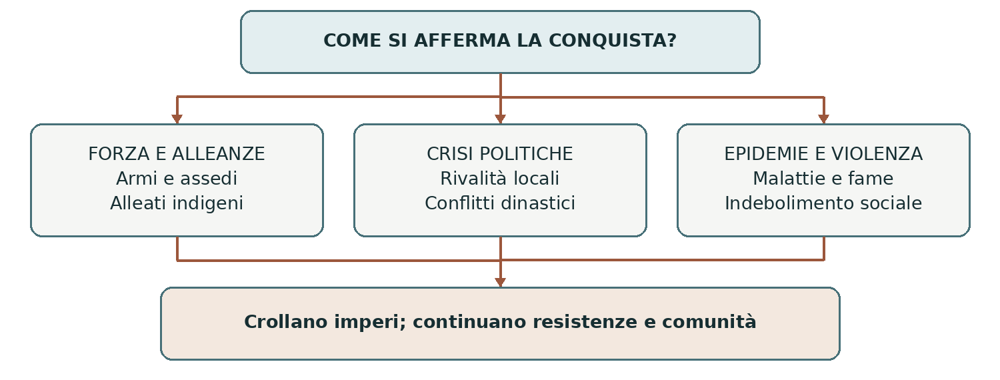
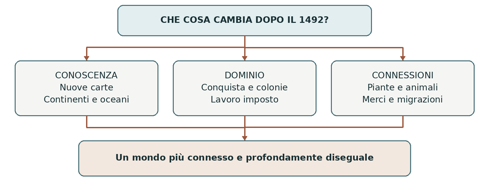

DAL MEDIOEVO ALL’ETÀ MODERNA
La scoperta delle Americhe
Viaggi oceanici conquista e trasformazione del mondo
Il 12 ottobre 1492 la spedizione di Cristoforo Colombo raggiunse un’isola delle Bahamas cercando una rotta occidentale per l’Asia. Quel viaggio aprì una fase di collegamenti continuativi fra Europa e Americhe. Nei decenni successivi esplorazioni, conquiste e colonizzazione modificarono conoscenze geografiche, rapporti di potere e vita quotidiana su entrambe le sponde dell’Atlantico.
0 Domanda generatrice
Come poté un viaggio diretto verso l’Asia trasformare il mondo e sconvolgere la vita dei popoli americani? Per rispondere dobbiamo distinguere il progetto iniziale, ciò che i navigatori incontrarono e le conseguenze delle loro azioni. Le intenzioni di Colombo non coincidono con tutti gli effetti prodotti dalla sua impresa.
In sintesi Il 1492 avviò una trasformazione che andò molto oltre il viaggio. Per comprenderla occorre partire dai mondi che esistevano prima del contatto.
1 Il mondo precedente
Nel Quattrocento Europa, Africa e Asia erano già collegate da reti commerciali terrestri e marittime. Spezie, tessuti e altri prodotti attraversavano l’Oceano Indiano, il Mar Rosso e il Mediterraneo, passando attraverso diversi intermediari. Mercanti arabi, indiani, africani, italiani e di altre provenienze partecipavano a questi scambi: l’Europa era una parte di un sistema molto più ampio.
Le Americhe erano abitate da millenni e comprendevano società molto diverse: comunità di agricoltori, pescatori e cacciatori, città, regni e grandi imperi. Le popolazioni avevano proprie lingue, religioni, conoscenze dell’ambiente e reti di scambio. I territori incontrati dagli europei non erano spazi vuoti in attesa di ricevere una storia.
La parola scoperta descrive soprattutto un punto di vista europeo. Anche l’espressione Nuovo Mondo indica terre nuove per chi arrivava dall’altra parte dell’oceano. Inoltre, navigatori scandinavi avevano raggiunto Terranova intorno all’anno Mille: lo documenta il sito di L’Anse aux Meadows. La svolta del 1492 consistette nell’avvio di rapporti transatlantici continuativi, seguiti dalla costruzione di domini coloniali.
In sintesi Prima di Colombo esistevano società complesse su entrambe le sponde dell’Atlantico. La novità storica fu il modo in cui i loro destini vennero collegati.
L’immagine del mondo e i limiti delle conoscenze
Una Terra sferica ma misurata in modo incerto
La sfericità della Terra era nota alla cultura colta europea attraverso la tradizione antica e medievale. Colombo non dovette dimostrare che il pianeta fosse rotondo contro un’opinione unanimemente convinta del contrario. Il problema concreto era un altro: quanto distava l’Asia navigando verso ovest, e una nave poteva raggiungerla con le risorse disponibili?
Le stime della circonferenza terrestre e dell’estensione dell’Asia variavano. Colombo combinò letture, calcoli e informazioni di viaggio in modo da sottovalutare la distanza fra Europa e Asia attraverso l’oceano. Nel suo progetto non figuravano né le Americhe come barriera continentale né la reale ampiezza del Pacifico. L’approdo del 1492 fu quindi il risultato di una navigazione riuscita verso una destinazione diversa da quella prevista.
Tolomeo e una geografia in trasformazione
La Geografia di Claudio Tolomeo, studioso del II secolo d.C., forniva metodi per rappresentare luoghi mediante coordinate. La sua riscoperta nell’Europa latina del Quattrocento ebbe grande importanza, ma non esisteva una sola carta condivisa da tutti. Tradizioni antiche, carte nautiche, racconti di mercanti e osservazioni recenti potevano concordare oppure entrare in contrasto.
Gli europei distinguevano tradizionalmente Europa, Asia e Africa, ma ne conoscevano in modo diseguale estensione e coste. I navigatori non applicavano semplicemente una mappa già completa: ogni viaggio poteva costringere a correggere le rappresentazioni precedenti. Per questo la cartografia diventò anche uno strumento della competizione fra monarchie.
Risorsa | Utilità | Limite |
|---|---|---|
Bussola | Aiuta a mantenere una direzione. | Non fornisce da sola la posizione della nave. |
Osservazioni astronomiche | Consentono di stimare soprattutto la latitudine. | Le misure in mare sono difficili; la longitudine resta problematica. |
Carte e portolani | Raccolgono informazioni su coste, porti e percorsi. | Sono incompleti fuori dalle aree già frequentate. |
Navi e pratica nautica | Scafi, vele e conoscenza dei venti rendono possibili viaggi lunghi. | Tempeste, viveri e riparazioni continuano a imporre rischi. |
In sintesi L’espansione dipese da conoscenze accumulate e da errori, oltre che da innovazioni. Le carte vennero trasformate dall’esperienza dei viaggi.
2 Le fratture e la ricerca delle rotte oceaniche
Perché partire
La domanda europea di spezie e merci pregiate offriva prospettive di guadagno. Raggiungere direttamente i mercati asiatici significava tentare di ridurre la dipendenza dagli intermediari e controllare una parte maggiore dei profitti. A queste motivazioni si unirono ricerca dell’oro, rivalità politiche e progetti di espansione cristiana.
La conquista ottomana di Costantinopoli nel 1453 modificò gli equilibri del Mediterraneo orientale, ma non chiuse tutti i commerci con l’Asia. Gli scambi continuarono attraverso diverse vie. L’espansione portoghese, inoltre, era iniziata prima del 1453: attribuirla interamente alla caduta della città confonde il contesto politico con una causa unica.
Il percorso portoghese
Nel corso del Quattrocento il Portogallo ampliò la propria presenza nell’Atlantico e lungo le coste africane. Il principe Enrico il Navigatore, morto nel 1460, sostenne alcune delle prime iniziative. Le esplorazioni non furono tutte guidate personalmente da lui né realizzarono fin dall’inizio un piano immutabile per arrivare in India. Si intrecciarono commercio, conquista di posizioni strategiche, ricerca dell’oro e cattura e compravendita di persone ridotte in schiavitù.
Nel 1488 Bartolomeo Dias, indicato anche come Diaz, doppiò il Capo di Buona Speranza, all’estremità meridionale dell’Africa. Nel 1498 Vasco da Gama raggiunse Calicut, nell’India sud-occidentale. La rotta collegava via mare l’Europa all’Oceano Indiano, dove esistevano già reti di navigazione e commercio. I portoghesi entrarono in quel sistema cercando di imporsi anche con la forza.

In sintesi Le nuove rotte nacquero da interessi e risorse diversi. Il progetto di Colombo si inserì in questa competizione, proponendo di raggiungere l’Asia attraverso l’Atlantico.
3 Attori gruppi e conflitti
Chi rende possibile il viaggio
Un’impresa oceanica richiedeva autorizzazioni, denaro, navi, equipaggi e rifornimenti. I sovrani potevano concedere privilegi e diritti di governo; mercanti e finanziatori cercavano profitti; marinai e piloti fornivano competenze. I navigatori celebri operarono dentro queste reti, senza le quali nessuna spedizione sarebbe partita.
Isabella di Castiglia e Ferdinando d’Aragona, i sovrani cattolici, sostennero Colombo. I loro regni erano uniti dinasticamente ma mantenevano istituzioni distinte: l’impresa americana fu legata soprattutto alla corona di Castiglia. Nel 1492 si concluse anche la conquista di Granada. Espansione politica e missione religiosa si rafforzavano reciprocamente, pur non esaurendo le motivazioni economiche.
I popoli americani
Area e popolazioni | Organizzazione | Rapporto con la conquista |
|---|---|---|
Caraibi e Taíno | Agricoltura, villaggi, navigazione fra isole e autorità locali dette cacicchi. | Sono fra i primi a entrare in contatto con la spedizione di Colombo. |
Messico centrale e Mexica | Tenochtitlan è il centro di un potente sistema imperiale e tributario, comunemente detto azteco. | I rapporti con popolazioni subordinate e rivali condizionano le alleanze del 1519–1521. |
Area maya | Numerosi centri e formazioni politiche in Mesoamerica; nessun unico impero maya nel 1492. | Le conquiste europee sono lunghe e frammentate; le comunità maya continuano a esistere. |
Ande e Inca | Ampio impero con centro a Cuzco, strade, funzionari e prestazioni di lavoro. | Una guerra dinastica ne indebolisce la coesione alla vigilia dell’intervento di Pizarro. |
Nessuna tabella può riassumere tutti i popoli delle Americhe. Le società citate servono a orientarsi nei principali episodi del capitolo. Anche all’interno di ciascuna area esistevano differenze e conflitti: alcuni gruppi resistettero agli europei, altri cercarono alleanze contro nemici locali, altri ancora negoziarono condizioni di sopravvivenza.
Alle relazioni atlantiche parteciparono inoltre popolazioni africane, mercanti, intermediari e, in numero crescente, persone deportate in schiavitù. L’Africa non fu soltanto una costa da aggirare: entrò pienamente nella costruzione del sistema coloniale.
In sintesi Il processo coinvolse una pluralità di attori. Per comprenderlo bisogna collegare i progetti delle monarchie alle scelte e alle condizioni delle popolazioni incontrate.
4 Il processo storico e il viaggio del 1492
Dalla partenza al primo approdo
Cristoforo Colombo, navigatore genovese, propose di raggiungere le Indie navigando verso ovest. Il termine Indie indicava per gli europei un’area asiatica ampia e dai confini poco precisi. Dopo anni di trattative, Colombo ottenne l’appoggio dei sovrani cattolici e privilegi legati all’esito dell’impresa.
Il 3 agosto 1492 partì da Palos con tre navi. La Santa María, nave ammiraglia, era una nave da carico di tipo nao; la Pinta e la Niña erano caravelle. Dopo una sosta alle Canarie, la spedizione affrontò la traversata atlantica. Il vento favorevole all’andata non eliminava le incertezze sulla distanza e sulla possibilità del ritorno.
Il 12 ottobre 1492 gli uomini della spedizione raggiunsero un’isola delle Bahamas, chiamata dagli abitanti Guanahaní e ribattezzata da Colombo San Salvador. L’identificazione esatta dell’isola resta discussa. Colombo interpretò l’approdo attraverso il proprio progetto asiatico: da qui l’uso del termine indios per popolazioni che non appartenevano all’India.
Tappa | Collocazione e significato |
|---|---|
Palos e Canarie | Dalla penisola iberica all’arcipelago atlantico usato come base della traversata. |
Bahamas | Primo approdo del 12 ottobre; non il continente asiatico. |
Cuba | Esplorata cercando indizi che confermassero la vicinanza dell’Asia. |
Hispaniola | Isola oggi divisa fra Haiti e Repubblica Dominicana; primo insediamento lasciato dalla spedizione. |
Ritorno nel 1493 | La notizia raggiunge la corte e circola in Europa, suscitando nuovi progetti. |
Un contatto subito segnato da rapporti di potere
La spedizione incontrò popolazioni con proprie autorità e reti di scambio. Ci furono doni, tentativi di comunicazione e ricerca di informazioni. Colombo attribuì nuovi nomi alle terre e ne rivendicò il possesso per i sovrani. Prese inoltre con la forza alcuni abitanti, destinati anche a fare da interpreti: la violenza non iniziò soltanto molti anni dopo, con Cortés e Pizarro.
Dopo il naufragio della Santa María, alcuni uomini rimasero a La Navidad, a Hispaniola. Colombo tornò in Europa nel 1493. Le quantità di oro e merci riportate erano lontane dalle aspettative, ma egli presentò le isole come una grande opportunità commerciale, politica e religiosa.
In sintesi Il viaggio aprì una via atlantica continuativa. Fin dall’inizio, conoscere le terre, nominarle e rivendicarne il possesso furono azioni strettamente collegate.
Dai viaggi di Colombo al nome America
Quattro viaggi e una destinazione ancora incerta
Colombo compì quattro viaggi fra il 1492 e il 1504. L’ampiezza delle spedizioni e gli obiettivi cambiarono: al riconoscimento delle coste si affiancarono insediamenti, ricerca di risorse e imposizione del dominio. La sua attività come governatore generò conflitti anche con i coloni e con i rappresentanti della corona.
Viaggio | Aree raggiunte | Che cosa cambia |
|---|---|---|
1492–1493 | Bahamas, Cuba e Hispaniola. | Si apre il collegamento con i Caraibi. |
1493–1496 | Piccole Antille, Porto Rico, Hispaniola e Giamaica. | Una spedizione molto più ampia avvia una presenza coloniale stabile. |
1498–1500 | Trinidad e costa settentrionale dell’America meridionale. | Colombo raggiunge anche la terraferma sudamericana. |
1502–1504 | Coste dell’America centrale. | Continua la ricerca di un passaggio verso i mercati asiatici. |
Colombo non elaborò la stessa rappresentazione delle Americhe che adottiamo oggi. Pur riconoscendo la presenza di terre estese e inattese, continuò a collegarle al proprio progetto asiatico. Non trovò la rotta occidentale diretta per le Indie che aveva promesso.
Vespucci e la costruzione di una nuova geografia
Amerigo Vespucci, navigatore fiorentino, partecipò a esplorazioni delle coste sudamericane. I suoi viaggi e le lettere diffuse con il suo nome contribuirono all’idea che quelle terre costituissero un Nuovo Mondo distinto dall’Asia. La ricostruzione dei singoli itinerari e l’attribuzione di alcuni testi sono state discusse dagli studiosi: non è prudente presentare ogni dettaglio, compreso l’arrivo fino all’attuale Argentina, come indiscutibile.
Nel 1507 il cartografo Martin Waldseemüller pubblicò una carta che usava il nome America, in onore di Amerigo. Il nome compariva sulla parte meridionale del nuovo continente. La carta, insieme alle pubblicazioni che l’accompagnavano, mostra come notizie di viaggio e stampa trasformassero la conoscenza geografica. Comprendere l’esistenza di nuove terre fu un processo collettivo e graduale, non un’intuizione isolata che tutti accettarono immediatamente.
Un altro passaggio fu l’osservazione europea del Pacifico dall’istmo di Panama, compiuta da Vasco Núñez de Balboa nel 1513. Restava da capire come raggiungerlo via mare e quanto fosse esteso. Il problema di una rotta occidentale per l’Asia era ancora aperto.
In sintesi L’arrivo nelle Americhe e il riconoscimento della loro posizione nel mondo furono due processi distinti. Nuove osservazioni modificarono lentamente le carte e le interpretazioni.
Dividere le rotte e collegare gli oceani
Il trattato di Tordesillas
Le scoperte europee generarono rivalità per il controllo dei territori e delle rotte. Con il trattato di Tordesillas del 1494, Castiglia e Portogallo concordarono una linea di demarcazione nell’Atlantico, situata 370 leghe a ovest delle isole di Capo Verde. La distanza indicava un criterio pattuito, ma tradurlo in un confine geografico esatto era difficile con gli strumenti del tempo.
Le nuove terre a occidente della linea rientravano nella sfera rivendicata dalla Castiglia, quelle a oriente in quella portoghese. Era un accordo fra due corone europee: le popolazioni dei territori interessati non parteciparono alla decisione. La pretesa di assegnarsi diritti non equivaleva al controllo effettivo dei luoghi, né venne accettata automaticamente da tutte le altre potenze.
Nel 1500 Pedro Álvares Cabral, durante una spedizione diretta in India, raggiunse la costa del Brasile. La sua posizione nella sfera portoghese contribuì alla successiva formazione di un dominio distinto da quelli castigliani. Il Brasile attuale, tuttavia, è il risultato anche di espansioni posteriori: i suoi confini non coincidono semplicemente con la linea del 1494.
Percorso | Obiettivo | Esito iniziale |
|---|---|---|
Via africana portoghese | Raggiungere l’Asia aggirando l’Africa. | Dias apre il passaggio nel 1488; da Gama giunge in India nel 1498. |
Via atlantica di Colombo | Raggiungere l’Asia navigando a ovest. | L’approdo del 1492 avviene nelle Americhe. |
Spedizione di Magellano | Trovare un passaggio verso l’Asia oltre l’America. | Attraversa lo stretto sudamericano e il Pacifico; il ritorno completa il giro del mondo. |
La prima circumnavigazione
Nel 1519 partì, al servizio della monarchia spagnola, la spedizione guidata dal portoghese Ferdinando Magellano. Nel 1520 superò lo stretto che oggi porta il suo nome, all’estremità meridionale dell’America, e attraversò il Pacifico. Magellano morì nelle Filippine nel 1521. Fu Juan Sebastián Elcano a guidare la nave Victoria nel viaggio di ritorno, concluso nel 1522.
La spedizione realizzò la prima circumnavigazione del pianeta e rese evidente l’enorme estensione degli oceani. Non dimostrò per la prima volta una sfericità prima sconosciuta, né trasformò subito quella rotta lunga e pericolosa in un percorso commerciale facile.
In sintesi Le rotte unirono spazi oceanici e ampliarono le rivendicazioni europee. La conquista dei territori richiese però guerre, alleanze e forme di dominio duraturo.
La conquista dei grandi imperi americani
Cortés e il Messico
Nel 1519 Hernán Cortés iniziò la spedizione nel Messico. L’impero dei Mexica, spesso chiamato azteco, imponeva tributi a numerose comunità. Cortés trovò alleati fra popolazioni ostili a Tenochtitlan, tra cui i Tlaxcaltechi. Questi agirono per propri obiettivi: non erano semplici comparse nella guerra degli spagnoli.
Nel 1521, dopo combattimenti, un’epidemia di vaiolo e un lungo assedio, Tenochtitlan cadde. Armi d’acciaio, cavalli e armi da fuoco ebbero un ruolo, ma non spiegano da soli l’esito. Furono decisivi anche alleati indigeni, approvvigionamenti, rivalità politiche e distruzione delle risorse della città. La caduta della capitale non significò la sottomissione immediata di tutto il territorio mesoamericano.
Pizarro e le Ande
Nelle Ande Francisco Pizarro intervenne mentre l’impero inca era indebolito da epidemie e da una guerra dinastica. Nel 1532, a Cajamarca, gli spagnoli catturarono il sovrano Atahualpa, che fu poi ucciso nel 1533. Nello stesso anno entrarono a Cuzco. La cattura del sovrano colpì il centro del potere, ma non eliminò ogni resistenza: un dominio inca sopravvisse a Vilcabamba fino al 1572.

Dal successo militare al dominio coloniale
Governare significava ottenere tributi, lavoro e controllo della terra. Con l’encomienda la corona assegnava a un beneficiario spagnolo il diritto di ricevere tributi e, secondo tempi e luoghi, prestazioni di lavoro da comunità indigene, in cambio di obblighi di tutela ed evangelizzazione. Non era formalmente proprietà delle persone; nella pratica alimentò gravi abusi e sfruttamento.
In sintesi Gli imperi furono abbattuti attraverso una combinazione di fattori. Le società indigene continuarono però a vivere, resistere e trasformarsi dentro e fuori l’ordine coloniale.
5 Le fonti in dialogo
Due modi di raccontare il contatto e la conquista
Le fonti non sono finestre neutrali sul passato. Chi scrive sceglie che cosa raccontare, usa categorie proprie e si rivolge a qualcuno. Confrontiamo una lettera di Colombo e una tipologia di testimonianza sulla conquista del Messico. I contenuti sono presentati come parafrasi e descrizioni didattiche, non come citazioni letterali.
Fonte A La lettera di Colombo del 1493
Nella lettera a Luis de Santángel, funzionario che aveva sostenuto l’impresa, Colombo annuncia il successo del viaggio. Dice di essere arrivato nelle Indie, descrive isole popolate e afferma di averne preso possesso per i sovrani. Presenta le terre come fertili e ricche di opportunità. Racconta inoltre di aver prelevato con la forza alcuni abitanti e collega la spedizione alla conversione cristiana e alla possibilità di ricavare risorse e schiavi.
Come leggerla. Colombo vuole mostrare il valore dell’impresa e ottenere sostegno. La lettera documenta bene il suo progetto e il suo modo di rappresentare gli abitanti; le promesse di ricchezza e i giudizi sulle società incontrate richiedono invece controlli. La sua rivendicazione del possesso non prova il consenso delle popolazioni.
Fonte B Il Codice fiorentino
Il Codice fiorentino, completato nel 1577, fu elaborato dal francescano Bernardino de Sahagún insieme a studiosi, scribi e artisti nahua. È scritto in nahuatl e spagnolo ed è conservato a Firenze. Il libro XII ricostruisce la conquista del Messico, facendo emergere esperienze e memorie indigene, fra cui la guerra e l’epidemia di vaiolo.
Come leggerlo. Il codice permette di confrontare la rappresentazione dei conquistatori con altre prospettive. È però una raccolta realizzata decenni dopo gli eventi, in un contesto coloniale e attraverso una collaborazione complessa. Non rappresenta automaticamente la voce di tutti i popoli americani né un racconto privo di mediazioni.
Confronto | Lettera del 1493 | Codice del 1577 |
|---|---|---|
Contesto | Primo viaggio nei Caraibi. | Memoria della società nahua e della conquista del Messico. |
Punto di vista | Il navigatore presenta il risultato ai sostenitori. | Una collaborazione restituisce conoscenze e memorie indigene. |
Domanda critica | Che cosa vuole far credere al destinatario? | Come incidono memoria, traduzione e contesto coloniale? |
Per lavorare sulle fonti: quali parole della lettera trasformano l’esplorazione in una rivendicazione di potere? Perché il codice amplia la prospettiva senza poter raccontare direttamente il primo approdo del 1492?
In sintesi Le due fonti riguardano luoghi e tempi diversi. Il confronto aiuta a distinguere progetto europeo, esperienza della conquista e limiti delle testimonianze. Riferimenti completi nella nota docente.
6 Conseguenze e nuovo assetto
Epidemie e crollo demografico
Le popolazioni americane subirono una gravissima diminuzione, diversa per tempi e intensità nelle varie regioni. Vaiolo, morbillo e altre infezioni introdotte attraverso i contatti transoceanici ebbero effetti devastanti in comunità che non avevano avuto precedenti esposizioni a quei patogeni. Non si trattava di una generica debolezza biologica dei popoli americani.
Le epidemie agirono insieme a guerre, lavoro imposto, spostamenti forzati, fame e distruzione delle risorse. La morte di adulti impegnati nei raccolti e nella cura dei malati poteva aggravare ulteriormente la crisi. Le stime della popolazione precedente e delle perdite sono discusse: un unico numero per tutto il continente nasconderebbe differenze e incertezze. La catastrofe non comportò però la scomparsa di tutti i popoli indigeni.
Lo scambio colombiano
Con scambio colombiano gli storici indicano il trasferimento, dopo il 1492, di piante, animali e agenti patogeni fra le Americhe e gli altri continenti. Le nuove specie modificarono alimentazione, lavoro e paesaggi. Il processo ebbe tempi lunghi: patate e pomodori non entrarono immediatamente nelle abitudini alimentari di tutti gli europei.
Direzione | Esempi | Trasformazioni |
|---|---|---|
Dalle Americhe verso altri continenti | Mais, patata, pomodoro, cacao, tabacco. | Nuove coltivazioni e consumi, diffusi gradualmente anche fuori dall’Europa. |
Da Europa, Africa e Asia verso le Americhe | Grano, canna da zucchero, cavalli, bovini, suini. | Nuove produzioni, trasporti e allevamenti; trasformazioni dell’uso del suolo. |
Attraverso i contatti transoceanici | Patogeni, fra cui il virus del vaiolo introdotto nelle Americhe. | Epidemie e gravi squilibri demografici. |
Lavoro e deportazioni
Miniere e piantagioni richiedevano grandi quantità di lavoro. La colonizzazione impiegò diverse forme di coercizione sugli indigeni e favorì la crescita della tratta atlantica degli africani ridotti in schiavitù. La tratta non nacque tutta nel 1492: ebbe precedenti quattrocenteschi e si ampliò nei secoli seguenti. Le persone deportate erano soggetti con famiglie, conoscenze e culture, non soltanto una voce del commercio.
In sintesi Lo scambio di specie ebbe conseguenze globali, ma avvenne dentro rapporti di potere molto diseguali. Alle opportunità di profitto si accompagnarono espropriazione e violenza.
7 Conclusione
Un mondo più connesso
La ricerca di una via per l’Asia portò alla costruzione di collegamenti regolari con le Americhe. Le monarchie iberiche trasformarono questi collegamenti in rivendicazioni territoriali, insediamenti e domini. Le reti oceaniche ampliarono la circolazione delle merci e delle conoscenze, mentre la conquista impose nuovi rapporti di lavoro e di potere.
Nel Cinquecento l’oro e soprattutto l’argento americano alimentarono circuiti di scambio sempre più vasti, che coinvolsero anche l’Asia. I porti atlantici acquistarono importanza, ma il Mediterraneo non cessò improvvisamente di avere un ruolo. Parlare di una prima globalizzazione può aiutare a cogliere l’ampliamento delle connessioni, purché non si immagini già il mondo contemporaneo o un processo uniforme.
Le Americhe non furono una fonte “inesauribile” di ricchezze: l’estrazione e la produzione ebbero costi umani e ambientali. Anche le popolazioni europee e africane ebbero esperienze differenti. Profitto di alcuni gruppi, subordinazione di altri, resistenze e nuove culture si svilupparono contemporaneamente.

Il significato della data 1492
Il 1492 è una delle date convenzionali usate per segnare l’inizio dell’Età moderna nella storia europea. Una periodizzazione serve a riconoscere una trasformazione, non a sostenere che il mondo intero cambiò in un giorno. Per gli abitanti delle diverse regioni americane il contatto e la conquista avvennero in momenti differenti, spesso molto più tardi.
Sintesi finale
La ricerca di rotte e profitti si intrecciò con la rivalità fra monarchie.
Colombo raggiunse le Americhe mentre cercava una via occidentale per l’Asia.
Nuovi viaggi e carte modificarono gradualmente l’immagine del mondo.
La conquista dipese anche da alleanze indigene, crisi politiche ed epidemie.
Colonizzazione e deportazioni produssero profonde disuguaglianze.
Lo scambio colombiano trasformò ambienti e abitudini su scala globale.
Il mondo divenne più connesso, attraverso processi diversi e spesso violenti.
Coordinate e strumenti per studiare
Linea del tempo ragionata
Data | Snodo | Significato |
|---|---|---|
Circa 1000 | Presenza scandinava a Terranova. | Precedente europeo documentato dal sito di L’Anse aux Meadows. |
1488 | Dias supera il Capo di Buona Speranza. | Si apre la possibilità della rotta africana verso l’Asia. |
1492 | Colombo raggiunge le Bahamas. | Inizio di collegamenti transatlantici continuativi. |
1494 | Trattato di Tordesillas. | Le corone iberiche delimitano le proprie rivendicazioni. |
1498 / 1500 | Da Gama in India / Cabral in Brasile. | L’espansione portoghese collega più spazi oceanici. |
1507 | Carta di Waldseemüller. | Compare il nome America. |
1519–1522 | Spedizione Magellano ed Elcano. | Prima circumnavigazione del pianeta. |
1521 | Caduta di Tenochtitlan. | Crolla il centro dell’impero mexica. |
1532–1533 | Cattura di Atahualpa e presa di Cuzco. | Snodi della conquista dell’impero inca. |
Vocabolario essenziale
Termine | Definizione |
|---|---|
Indie | Denominazione europea delle regioni asiatiche cercate dai navigatori. |
Indigeno | Appartenente a una popolazione originaria di un territorio; non indica un’unica cultura. |
Latitudine e longitudine | Coordinate che indicano la posizione rispetto all’equatore e a un meridiano di riferimento. |
Circumnavigazione | Viaggio per mare intorno a un territorio o all’intero pianeta. |
Conquista e colonizzazione | Imposizione del dominio con la forza e sua organizzazione duratura nei territori. |
Conquistadores | Capi e partecipanti alle imprese spagnole di conquista. |
Encomienda | Assegnazione di tributi e, secondo tempi e luoghi, lavoro di comunità indigene a un beneficiario. |
Tratta atlantica | Deportazione e commercio di persone ridotte in schiavitù attraverso l’Atlantico. |
Scambio colombiano | Trasferimento di specie e patogeni fra le Americhe e altri continenti dopo il 1492. |
Saperi irrinunciabili e attività
Dieci idee da saper spiegare
1. Le Americhe avevano una lunga storia e una grande varietà di società prima degli europei.
2. La ricerca delle nuove rotte dipese da commercio, potere, religione e conoscenze nautiche.
3. Il 1453 non chiuse tutti i commerci con l’Asia e non fu l’unica causa delle esplorazioni.
4. I portoghesi raggiunsero l’India nel 1498, aggirando l’Africa.
5. Colombo cercava l’Asia; il 12 ottobre 1492 raggiunse un’isola delle Bahamas.
6. Il problema del suo progetto era la distanza, non la dimostrazione della sfericità terrestre.
7. Vespucci e la cartografia contribuirono al riconoscimento di un continente distinto; America compare nel 1507.
8. Tordesillas stabilì rivendicazioni europee, non il consenso degli abitanti né un dominio già realizzato.
9. Le conquiste si spiegano con più fattori: armi, alleanze indigene, crisi politiche ed epidemie.
10. Lo scambio colombiano trasformò il mondo dentro un sistema segnato anche da coercizione e schiavitù.
Comprendere e argomentare
A. Orientarsi nello spazio. Su un planisfero individua Palos, Canarie, Bahamas, Cuba, Hispaniola, Capo di Buona Speranza, Calicut, Brasile, Messico e Ande. Traccia con due colori la via africana e il progetto occidentale di Colombo. Distingui la destinazione prevista da quella raggiunta.
B. Ricostruire le cause. Spiega in 10 righe perché “Costantinopoli cade, quindi iniziano le scoperte” è una spiegazione insufficiente. Usa almeno tre fattori e un elemento cronologico.
C. Correggere una ricostruzione. Riscrivi: “Colombo dimostrò che la Terra era rotonda; Vespucci inventò da solo la nuova geografia; poche centinaia di spagnoli vinsero soltanto grazie alle armi superiori”. Motiva le correzioni.
D. Leggere le fonti. Nella lettera del 1493 distingui osservazioni, aspettative economiche e rivendicazioni di potere. Spiega quale prospettiva manca e perché il Codice fiorentino aiuta a studiare la conquista senza essere una testimonianza sul primo incontro nelle Bahamas.
E. Rispondere al problema. Scrivi 15 righe sulla domanda generatrice. Metti in relazione un cambiamento delle conoscenze, uno dei rapporti di potere e uno della vita quotidiana. Evita di presentare tutti gli europei o tutti gli indigeni come gruppi con un’unica esperienza.
Fonti e letture
Base della lezione: La scoperta delle Americhe.docx, materiale del docente. Riferimenti di controllo: Library of Congress, Exploring the Early Americas; UNESCO, Treaty of Tordesillas; Parks Canada, L’Anse aux Meadows; Getty Research Institute, Digital Florentine Codex; National Museum of the American Indian, NK360; Treccani, Amerigo Vespucci. Fonte A: lettera di Colombo a Santángel, 1493, testo in faculty.etsu.edu/history/documents/columbus.htm. Riferimenti estesi e precisazioni nella nota docente. Consultazione: 2 ottobre 2026.